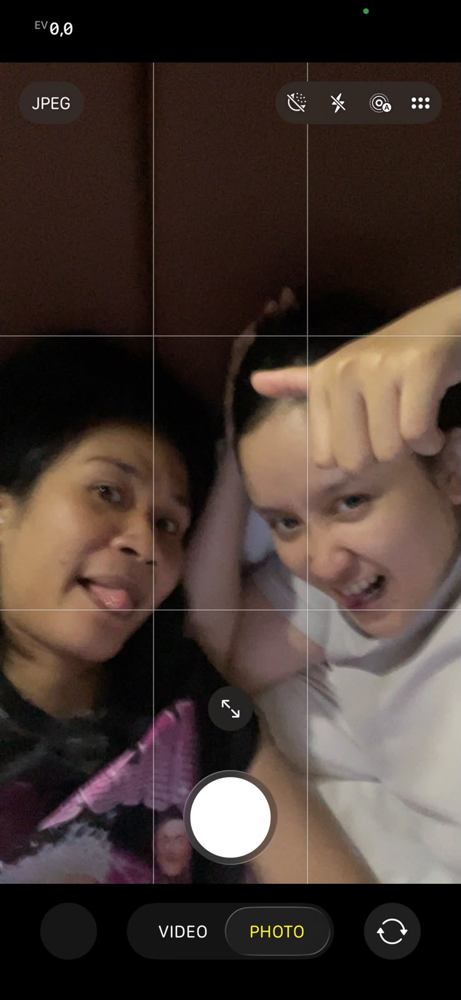

More than a month of sharing a little life together.
And now, a tiny place to keep some of it.
SCROLL A LITTLE ↓
01 / one of my favorite memories
Our little world.
A month-plus of sharing the same space, the same routines,
and a whole lot of little moments.
I didn't know I'd get this attached to the everyday stuff.

one of those little moments i'll keep 🤍
"I think my favorite part was simply having you here."
02 / our little routines
The things that felt like home.
Funny how the smallest things can become the things
you miss the most.
🫂
The morning hug
That tight hug every time we woke up.
My favorite way to start the day, before the world got busy.
🏡
The after-work hug
Coming home and getting to hug you again.
Somehow, that made even a long workday feel lighter.
🌙
Our good night kiss
A tiny ritual at the end of the day.
Simple, familiar, and something I already know I'll miss.
🍗
The legendary ayam pucat
Our very glamorous catering era.
No cooking, just my catering and its iconic ayam pucat.
HAHAHA. A culinary legacy, honestly.
"I didn't need every day to be exciting.
I just liked having you in it."
03 / things i'll miss
And especially this one.
There are a lot of little things I'll miss,
but there's one sentence I can already hear in my head.
"Sayang tidur yang benar biar gak sakit punggungnya."
The way you look after me, even in the tiniest things.
I'll miss being reminded to take care of myself by you.
♡ Your hugs when I wake up and when I get home.
♡ Your good night kisses.
♡ Having you around, even when we're doing completely different things.
♡ Your little reminders, your voice, and all the ordinary things that became ours.
04 / our very unserious moments
Sorry for being... me.
I know I can be a handful sometimes.
A very specific kind of handful.
✳ Often annoying. A little too often, maybe.
✳ Forgetful. Even about things I literally just heard.
✳ Messing up the bed like it's my full-time job.
✳ Becusn't. You know exactly what I mean. 😭
✳ And somehow, still very loved by you.
Thank you for loving me, including the slightly chaotic,
forgetful, bed-destroying version of me.
P.S. The ayam pucat was never my fault. Probably.
05 / a tiny reminder machine
Whenever you miss me.
Tap the button. The duck has a few things to tell you.
What do you need to hear today?
The duck is available 24/7. Fishbin too, obviously.
06 / keep this for later
Open when you miss me.
For a quiet day, a random Tuesday,
or whenever you wish we were in the same place.
💌
A little letter for Baby
TAP TO OPEN · TAKE YOUR TIME
Hey, Baby. 🤍
I don't really know how to explain how happy I am that we got to share more than a month together.
Not just the fun plans or the days we went out. I mean the everyday things. Waking up next to you, getting those tight hugs in the morning, coming home and finding you there, our good night kisses, and all the little moments in between.
Even our very questionable catering era with my legendary ayam pucat. HAHAHA. We really never cooked, but somehow we made it work.
I know I'm not always the easiest person to live with. I can be annoying, forgetful, mess up the bed, and be completely becusn't sometimes. But you stayed sweet with me. You kept loving me, taking care of me, and reminding me to sleep properly so my back wouldn't hurt.
And I hope you know how much that means to me.
I'm going to miss having you around. I'll miss the smile, the hugs, the kisses, your little reminders, and just knowing you're somewhere nearby. I think my days will feel a little bit lonelier after this.
But I'm not saying this to make today harder. I'm saying it because I want you to know that this time meant so much to me. Thank you for sharing your days, your space, your stories, and all the little parts of yourself with me.
Now we're going back to our own routines for a while. Please take care of yourself, okay? Eat well, rest properly, and don't forget that you can still tell me absolutely anything. Even the most random, boring, unnecessary updates. I want them.
And you know what?!
You're still the one I love most in this whole entire world. Paling ku sayang satu bumi. No competition. 🤍
This isn't the end of our little everyday life. Just a pause until we get to make more memories together.
I love you, Baby.
Yours,
Fishbin 🐟
07 / one thing from you
Tell me your favorite little memory?
One moment from our month together that you'd happily relive.
I want to keep it too.